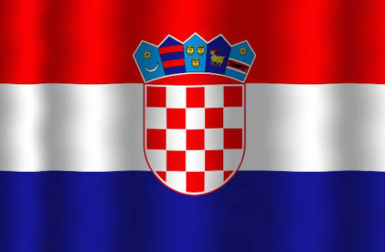

Luka Modrić is the undisputed icon of Croatian football and its all-time most-capped player. Since making his international debut in 2006, the world-class midfielder has been the tireless heartbeat of his national team. Modrić’s crowning moment arrived at the 2018 FIFA World Cup, where he captained Croatia to an extraordinary runner-up finish, earning the Golden Ball as the tournament's best player and later winning the prestigious Ballon d'Or. Defying age, he continued his dominance into the 2020s, guiding his country to third place at the 2022 World Cup and the final of the 2023 UEFA Nations League. Renowned for his supreme vision, tactical intelligence, and unbelievable longevity, Modrić transformed Croatia into a global footballing powerhouse.
